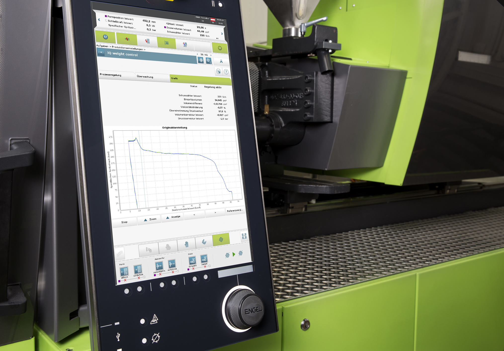

Executive Summary
NVIDIA Omniverse is usually introduced as "a simulation platform for building physically accurate 3D worlds." This report looks one layer down. The real asset holding up Omniverse is not the rendering engine but the data standard Pixar spent twenty-five years refining: OpenUSD (Universal Scene Description). Just as relational databases became industrial infrastructure once they settled on SQL as a standard, scattered 3D, physics, and robotics data only becomes an interoperable asset on top of the shared grammar that OpenUSD provides.
On December 17, 2025, the Alliance for OpenUSD (AOUSD), hosted by the Linux Foundation, released Core Specification 1.0 — and with it, USD moved from a "de facto standard" to an internationally recognized one. Lay the standard, and the data starts to flow. On top of USD, Omniverse builds worlds, generates synthetic data through simulation, trains robots on that data, and then validates them again, looping the cycle. But a standard only unifies the form of data; it does not guarantee its quality. That is the center of gravity of this report.
Even when USD unifies the grammar for describing a scene, the physical accuracy, distributional representativeness, and label correctness of that scene do not follow automatically. The "volume" of synthetic data does not guarantee the "sufficiency" of training. If OpenUSD lifted the standard all the way up to form, the layer above it — the data quality, lineage, and governance that measure and guarantee sufficiency — is still empty. That blank space is exactly where Pebblous stands.
99%+
Real-data cut by synthetic data
RCAN, same performance retained (CVPR 2019)
32.1%
Ceiling of a frontier humanoid model
GR00T N1, kitchen task even with 780K trajectories
$1.69B→$6.66B
OpenUSD interoperability platform market
2025→2033, CAGR 18.7% (single-source estimate)
30+ firms
Members of the AOUSD open standard
Pixar, Apple, Adobe, Autodesk, NVIDIA & more
Standards Make Industries: What SQL Did, OpenUSD Now Does
Until the 1970s, a company's data was locked into the idiosyncratic format of each application. Only after SQL and the relational model arrived did data stop being a component of one particular program and become an independent asset that many tools could query and join together. The standard was laid first; the entire database industry grew on top of it. Today, 3D, physics, and robotics data stand at exactly the same crossroads.
The world of robots and simulation had too many formats. A robot body was described in URDF or SDF, a physics model in MJCF, a product design in STEP, a game asset in FBX or glTF. Even when describing the same factory, switching tools meant falling back into the swamp of exporting and re-importing every single time. OpenUSD binds this sprawl into one shared grammar. The standard Pixar evolved for animation production is now expanding into the common language of industry, robotics, and autonomous driving.
1.1A Composition System, Not an Exchange Format
A common misconception treats USD as "just another 3D file format." If FBX or glTF are exchange formats that hand off an entire scene in one piece, USD is a composition system that non-destructively layers many sources together. Thanks to mechanisms like layers, references, and composition arcs, a lighting artist, a modeling artist, and a physics engineer can edit the same scene simultaneously without overwriting one another's work. The difference is closer to that between swapping CSV files and working in a database with transactions.
The table below compares the major 3D data formats through the lens of "what were they designed for?" The key point is that only USD treats collaboration and composition as a first-class goal.
| Format | Primary use | Nature | Non-destructive collaboration |
|---|---|---|---|
| OpenUSD | Scene description, assembly, collaboration | Composition system | Via layers, references, variants |
| FBX | Asset exchange between DCC tools | Exchange format (proprietary) | Limited |
| glTF | Runtime and web delivery | Exchange format (open) | None |
| STEP | CAD and manufacturing design | Exchange format (ISO) | None |
| URDF / SDF / MJCF | Robot and physics simulation description | Domain-specific description language | None |
1.2December 2025: From De Facto to Recognized Standard
December 17, 2025 was a watershed. When the Alliance for OpenUSD (AOUSD), hosted by the Linux Foundation, released Core Specification 1.0, USD rose from a "de facto standard" that vendors agreed to follow to the status of a documented international standard, much like PDF or HTML. Aaron Luk (NVIDIA), chair of the Core Spec working group, described USD as "the definitive grammar for how virtual worlds get built at scale." Once a specification is written down, implementations stop diverging; once implementations converge, data becomes an asset.
Key takeaway: OpenUSD is not a file format but a data standard layer. Just as SQL held up the database industry, USD becomes the common foundation that lets 3D, physics, and robotics data flow across tools. But the analogy holds cleanly only this far. From the next section, we watch where it breaks.
Omniverse Anatomy: Not an App, a Data OS
Think of Omniverse as a single installable app and you lose your way. It is not one program but a collection of tools that share USD as a common data layer. More precisely, it behaves like an operating system that orchestrates the creation, transformation, and consumption of data on top of USD. Each tool reads and writes the same USD assets, and that flow forms a single cycle.
2.1The Data Cycle Running on USD
The cycle turns through four stages. The flow below redraws the "collection of tools, not a single app" point as the path the data travels.
① World building
USD Composer assembles factories, cities, and interiors, then adds lighting and rendering. The output is USD assets.
② Simulation & synthesis
Isaac Sim and Isaac Lab run thousands of environments through GPU-parallel physics to generate synthetic data.
③ Training
The generated trajectories and footage train robot policies and autonomous systems via reinforcement and imitation learning.
④ Validation & feedback
Trained policies are validated again in simulation, and the results are fed back into the USD assets.
The heaviest stage in this cycle is ②. Isaac Lab uses USD prototypes as the basic unit of environment configuration, and by integrating the PhysX physics engine with photorealistic rendering, it runs thousands of parallel environments at once on eight GPUs. In the time a robot makes a single attempt in the real world, the simulation makes thousands. That is why synthetic data becomes the backbone of training rather than its supplement.

2.2Academia Catches Up to USD: A Scene Read by Humans, LLMs, and Simulators Alike
Academia, too, is elevating USD from a mere storage format into something models read and predict. The Real2USD work treats USD as "an XML-based scene graph an LLM can read," and research combining 3D scene graphs with ontologies standardizes the fragmentation of MJCF, URDF, and SDF onto USD. Articulate3D goes further and uses USD outright as a prediction target for machine learning. Just as SQL is a standard that humans and machines query together, USD is becoming the 3D standard that humans, LLMs, and simulators read together.
A generative layer attaches as well. World foundation models like Cosmos generate and augment synthetic data, and research into agentic scene generation proposes loops in which AI builds scenes on its own and iteratively critiques and refines them. One thing is worth flagging, though: no paper has yet theorized head-on the proposition that "OpenUSD is itself the data standard." Academia uses USD as a tool, but the work of asking what the standard itself means in the language of data quality is still empty. That, too, is the place this report tries to stand.
Who Holds the Standard: AOUSD and the Paradox of Openness
For a standard to become an asset, it cannot belong to one company. AOUSD formally satisfies that condition. Founded by Pixar, Apple, Adobe, Autodesk, and NVIDIA, this alliance operates under open governance within the Linux Foundation and now includes more than thirty firms, among them Siemens, Intel, Amazon, and Renault. Anyone can read and implement the specification, and no single vendor can unilaterally change its direction.
But governance being open is a different matter from gravity being evenly distributed. The actor that productizes USD most deeply and spreads it most widely is, by far, NVIDIA. Because Isaac, Cosmos, and Omniverse all place USD at their core, "using USD" in practice often tilts toward "using it on the NVIDIA stack." An open standard that nonetheless sits inside one vendor's gravity well — this is the paradox of openness.
3.1Gaps Inside the Standard, Competition Outside It
Fragmentation risk exists both inside and outside the standard at once. Inside, Core Spec 1.0 laid the foundation for interoperability but deferred areas like animation and scaling to later versions. Whatever is not yet written down leaves room for implementations to diverge. Outside the standard, alternative data models coexist: glTF/Khronos, STEP, and DTDL aimed at digital-twin technical models. Whether USD will absorb every domain or standards will split by domain is still an open question.
For practitioners, this paradox is no abstract debate. They must balance the promise that "adopting a standard frees you from vendor lock-in and turns data into an asset" against the reality that "the path that works best ends up being one vendor's stack." And this is where a division of labor comes into view: even if a vendor holds the standard and the tools above it, the work of judging whether that data is trustworthy must stay vendor-neutral.
The Blank Space Called Data Quality: Physical Accuracy, Sim-to-Real, Lineage
This is where the SQL analogy breaks. SQL did not merely unify form; it enforces data quality through integrity constraints. A wrong value is rejected by the database. USD is not like that. It unifies the grammar for describing a scene, but it enforces nothing about whether that scene is physically accurate, whether its distribution is representative enough to train on, or whether its labels are correct. Form has been standardized; sufficiency has not.
4.1"Volume" Does Not Guarantee "Sufficiency"
The power of synthetic data is unmistakable. RCAN reached equivalent performance using synthetic data and domain randomization alone, cutting real-data needs by more than 99%; high-quality digital-twin synthetic data even outperformed a model trained on real data by 4.8% in LiDAR perception. But you have to look at the other side of the same coin. GR00T N1, drawing on 780,000 trajectories (98–99% of them synthetic), still scored only 32.1% on the RoboCasa kitchen manipulation task, and FactoryBench measured that six frontier LLMs understood industrial data at below 50% at the structural level and below 18% at the decision level.
The table below places the capabilities and limits of synthetic data side by side. Quote one row alone and you get either hype or cynicism. You have to read both rows together to see the decisive variable. What matters is not the "volume" of data but its distributional coverage and fidelity — in other words, its "quality."
| Aspect | Evidence | Figure | Implication |
|---|---|---|---|
| Capability | RCAN (CVPR 2019) | 99%+ real-data cut | Equivalent performance from synthetic data |
| Capability | HiFi digital twin (2509.02904) | +4.8% over real data | High quality can even surpass real data |
| Limit | GR00T N1 (2503.14734) | 32.1% on kitchen task | Capped despite 780K trajectories, 98–99% synthetic |
| Limit | FactoryBench (2026) | Below 18% decision understanding | Six frontier LLMs, weak on industrial data |
4.2The Sim-to-Real Gap Is, at Its Core, Distribution Shift
The sim-to-real gap — where a policy that was flawless in simulation collapses in reality — is no mysterious phenomenon. At its core, it is distribution shift. When the data distributions of simulation and the real world diverge, a model optimized for the simulation distribution stumbles on the real-world one. A digital-twin evaluation study (2406.13145) measured that this distribution shift correlates directly with performance degradation, while at the same time admitting that "no standardized metric exists" to measure it. What cannot be measured cannot be guaranteed.
Follow-up research tries to decompose digital-twin accuracy with KL divergence, and active domain randomization work argues that "success hinges on designing the randomization distribution correctly." Designing a distribution and measuring its distances is precisely the language of data governance. On top of this sits the problem of label correctness. In one measurement, 10.2% of synthetic samples carried wrong labels. Even when form is unified, whether the content inside is correct must be owned by a separate layer.

There is one more trap. That a simulated scene looks realistic to the eye and that the scene's physics actually match reality are two different axes. The more sophisticated the rendering, the more "real-looking" data there is — but looking plausible does not mean being valid for training. Optical realism, physical accuracy, and the statistical representativeness of a distribution are each distinct quality metrics, and no single format standard satisfies them all at once. It means that even for the same USD scene, which axis it can be trusted on must be diagnosed separately.
4.3Form Is Filled In, Quality Is Still Empty
The matrix below separates what has been standardized from what is still empty. The left column is what USD has solved; the right column is the blank space that remains on top of the standard.
| Layer | Format standardization (solved by USD) | Quality standardization (still empty) |
|---|---|---|
| Scene description | Shared grammar, interoperability, non-destructive collaboration | Guarantee of physical accuracy |
| Synthetic data | Asset exchange and reuse format | Measuring distributional representativeness and sufficiency |
| Labels & metadata | Schema representation | Verifying label correctness |
| Asset lifecycle | Layer and version representation | Lineage and governance tracking |
Key takeaway: OpenUSD standardized the form of 3D data. The work of measuring and guaranteeing sufficiency on top of it — the quality layer of distribution, labels, and lineage — has no standard yet. As long as the sim-to-real gap is distribution shift, this blank space must be filled by data quality governance, not by rendering technology.
The Factory Floor and Pebblous's Place
The standard and the data cycle are already running on the factory floor. But when reading the reported effects, you have to distinguish the nature of the source. A figure that has passed academic validation and a projection announced solely by an adopter or vendor carry different weights of trust. The table below organizes representative adoption cases by their effect and a confidence grade.
| Case | Reported effect | Confidence grade |
|---|---|---|
| BMW | Up to 30% lower production-planning cost via virtual factory | Adopter official (cost, not time) |
| Foxconn | 30%+ annual power savings at Mexico plant | Vendor & adopter announcement |
| SKT / SK hynix | Autonomous fab digital-twin PoC completed (2025) | Corporate announcement (PoC stage) |
| Amazon | 750,000+ warehouse robots in operation | Case study |
| ABB | 40% lower deployment cost, 50% faster time-to-market | Vendor projection (third-party unverified) |
On top of this, the digital-twin market itself is expanding. Estimates from different institutions vary widely — from $48 billion to $328 billion around 2030, as much as a fourfold spread — yet most agree on growth rates north of 30% per year. Grand View Research's latest estimate puts it at $35.8 billion in 2025 rising to $328.5 billion by 2033 (CAGR 31.1%). It is safer to read this as a range and a point of consensus than to assert a single figure.

5.1What Agentic Workflows Demand of Data
The next stage is agentic workflows: instead of humans building scenes one by one, AI agents explore, manipulate, and generate data on their own inside USD environments. But once agents start producing their own data, the quality problem does not disappear — it amplifies. An agent trained on data generated from a skewed distribution can, in turn, produce even more skewed data, creating a feedback loop. The more the standard lets data flow, the greater the need for a layer that diagnoses that flow.
5.2The Standard Is NVIDIA's, the Quality Is Pebblous's
Put it all together and the picture is complementary. If OpenUSD standardized the form of 3D data, the layer that measures and guarantees sufficiency on top of it is still empty. Pebblous aims at this blank space. DataClinic, which diagnoses data quality; PebbloSim, which generates synthetic data; and DataGreenhouse, which operates AI-Ready Data — all are tools for answering one question: "Is this data sufficient for training?" The academic language of decomposing digital-twin accuracy into distributional distances is, in effect, the same language as DataClinic's distribution diagnosis.
What matters is the nature of the division of labor. Regardless of whether USD is adopted, Pebblous judges — vendor-neutrally — whether the data on top of it is trustworthy. Even if NVIDIA holds the standard and the simulation tools, the work of answering "does this synthetic data represent the real operating distribution?" remains a separate layer. This is not competition but a division of labor between layers.
Editor's Note. This report focuses on analyzing the structure of the OpenUSD standard and the data-quality blank space that remains on top of it. We mention Pebblous's products to show that the blank space is not an abstraction but a place someone is actually trying to fill. Please read the judgment about the standard's value and our own positioning as separate things.
References
Academic (arXiv)
- 1.NVIDIA. "GR00T N1: An Open Foundation Model for Generalist Humanoid Robots." (2025). arXiv: 2503.14734
- 2.NVIDIA. "Cosmos World Foundation Model Platform for Physical AI." (2025). arXiv: 2501.03575
- 3.NVIDIA. "Isaac Lab: A GPU-Accelerated Simulation Framework for Robot Learning." (2025). arXiv: 2511.04831
- 4.Aljalbout, E. et al. "The Reality Gap in Robotics: Challenges and Solutions." (2025). arXiv: 2510.20808
- 5."Real2USD: Scene Representations in the USD Language." (2025). arXiv: 2510.10778
- 6."Generating Actionable Robot Knowledge Bases: 3D Scene Graphs and Ontologies." (2025). arXiv: 2507.11770
- 7."Articulate3D: Holistic Understanding of 3D Scenes as Universal Scene Descriptions." (2024). arXiv: 2412.01398
- 8."Constructing and Evaluating Digital Twins (MSTE)." (2024). arXiv: 2406.13145
- 9."Label-Consistent Dataset Distillation." (2025). arXiv: 2507.13074
- 10."High-Fidelity Digital Twins for Sim2Real in LiDAR-Based ITS Perception." (2025). arXiv: 2509.02904
- 11.Mehta, B. et al. "Active Domain Randomization." (Mila, 2019). arXiv: 1904.04762
- 12.James, S. et al. "Sim-to-Real via Sim-to-Sim: Randomized-to-Canonical Adaptation Networks (RCAN)." CVPR 2019. arXiv: 1812.07252
- 13."Neural Scaling Laws for Embodied AI." (2024). arXiv: 2405.14005
Standards · Industry · Statistics
- 14.AOUSD / Linux Foundation. "OpenUSD Core Specification 1.0." (2025-12-17). aousd.org
- 15.Data Bridge Market Research. "OpenUSD-Based Interoperability Platforms Market." (2025) — $1.69B (2025)→$6.66B (2033), CAGR 18.7%. (Single-source estimate, medium confidence)
- 16.Grand View Research. "Digital Twin Market." (2025-12) — $35.8B (2025)→$328.5B (2033), CAGR 31.1%.
- 17.BMW Group. "Virtual Factory / Debrecen." Official press release (GTC) — up to 30% lower production-planning cost.
- 18.NVIDIA & Foxconn. "Guadalajara Factory Digital Twin." Official announcement — 30%+ annual power savings at Mexico plant.
- 19.SKT Newsroom & GTC Taipei. (2026-06-01) — SK hynix autonomous fab digital-twin PoC.
- 20.NVIDIA. "Amazon Robotics Case Study." — 750,000+ warehouse robots.
- 21.NVIDIA Newsroom / The Robot Report. "GTC 2026 — Humanoid & Industrial Robotics Ecosystem." (ABB, FANUC, KUKA, Yaskawa combined 2M+ units).
Pebblous-Adjacent (Internal Cross-References)
📚 Physical AI Series
This article is part of a series curated under Physical AI. How do we standardize the world a robot will learn from, and how do we guarantee that the data is sufficient — a place that reads data, standards, quality, and the industrial landscape together.